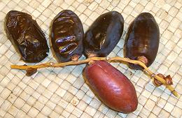

Palms

CHROME
& SAFARI
Users
- General & History -
- Varieties -
- Links -
In nature date palms are wind pollinated but in production they have been hand pollinated since ancient times. This produces a much heavier yield and makes one male tree sufficient to pollinate 100 fruit bearing female trees.
California follows the Arab naming system for stages of ripeness: Kimri (green unripe), khalal (yellow full-size and crunchy), rutab (ripe, darkened, very soft), tamr (fully ripe and sun-dried).
VarietiesThere are hundreds of date varieties but only a few are in major commercial production, and even fewer are found in markets in the United States.
Abbada - Black Date
Soft, creamy and very sweet, with an almost spice-like flavor. The photo
specimens were 1.3 x 0.7 inches and 0.25 ounces. each.
Barhi - [Berhi, Kharak Berhi, Barhee, Honeyball]
An almost spherical variety grown in Iran and Iraq, particularly popular there in the soft ripe (rotab) state. Grown in California as Barhi or Barhee, they are the main variety grown here that can be eaten in the khalal (crisp) state (most dates have too much tannin at that stage). They are available khalal in August and September and are shipped by air freight to Middle Eastern communities throughout the US, and by truck to California produce markets.
Here in Los Angeles, Middle Eastern folks cart these off by the sack
full when they're available. When buying them look for strands with some of
the dates starting to turn to the soft rotab state as these will be the
sweetest strands. These dates are also sold in the fully cured tamr state
when they are creamy and extremely sweet, thus the "honeyball" name. The
photo specimens were about 1.4 x 1.1 inches and weighed up to 0.3 ounces.
Deglet Noor
A very firm, elongated, light colored and medium sweet date with translucent
flesh The photo specimens were 1.5 x 0.75 inches and weighed 0.83 ounces.
Almost 80% of California production is in this very popular easy to handle
date.
Halawy - [Golden Princess]
Originally from Iraq, this is a very sweet medium size date with a creamy
texture and golden brown color.
Photo from
Dateland Palms Village Date Gardens
Hayani

A dark red to black date very popular in Egypt but not exported from there.
California produces a modest crop that is sold fresh as they are quite tricky
to cure.
Khadrawi
Originally from Iraq, this is a medium sweet, mahogany colored date with very
soft "pudding-like" flesh.
Photo from
Dateland Palms Village Date Gardens
Medjool
A large very sweet medium soft date that fetches a premium price. Originally
they were grown only in Morocco and only for royalty, but in 1927 disease
threatened to wipe out the trees, so 11 offshoots were sent to California
as a hedge against extinction. We're kinda short on royalty around here so
our growers will sell them to anyone with cash. The photo specimens were
2.0 x 1.2 inches and weighed 0.96 ounces each, though there are super-premium
varieties that are considerably larger.
Mozafati - [Bam Date]
This variety is grown largely in Iran, particularly around the city of Bam
in Keman province, thus the moniker "Bam Date". The photo specimens were not
marked for point of origin but the plastic package was made in Iran,
suggesting our government's ill conceived trade embargoes are as dysfunctional
as ever.
Soft and very sweet but not sticky on the outside, this variety is noted
for being edible in both soft ripe (rotab) and dried (tamr) forms, and having
an unusually long shelf life in either form.
Thoory
 Originally from Algeria, this date has very firm, chewy flesh when cured and
a nutty flavor. Photo from Hadley Fruit
Orchards
Originally from Algeria, this date has very firm, chewy flesh when cured and
a nutty flavor. Photo from Hadley Fruit
Orchards
Zahidi - [Zahdi]
Light golden-brown, semi-dry and very sugary. These dates are harvested and
cured in three stages, soft, medium hard and hard. They are widely used as a
culinary date.
Photo from Hadley Fruit
Orchards
- D1: California date production Purdue University.